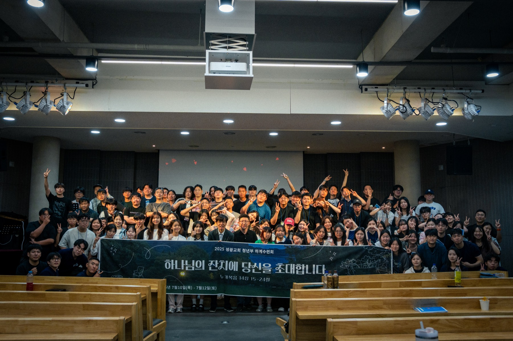
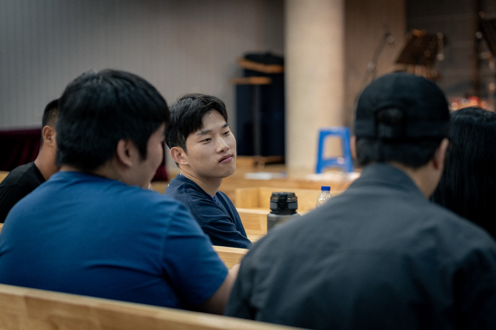
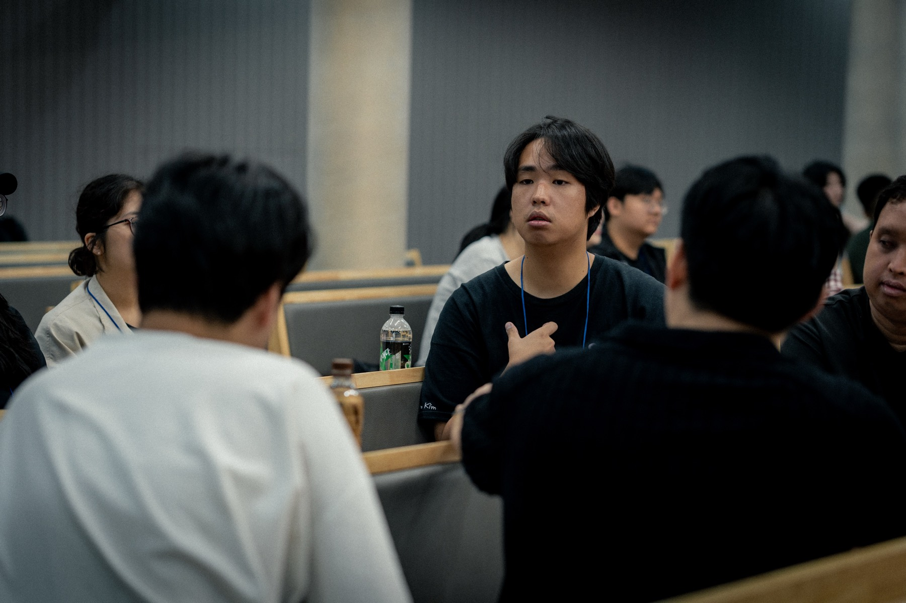
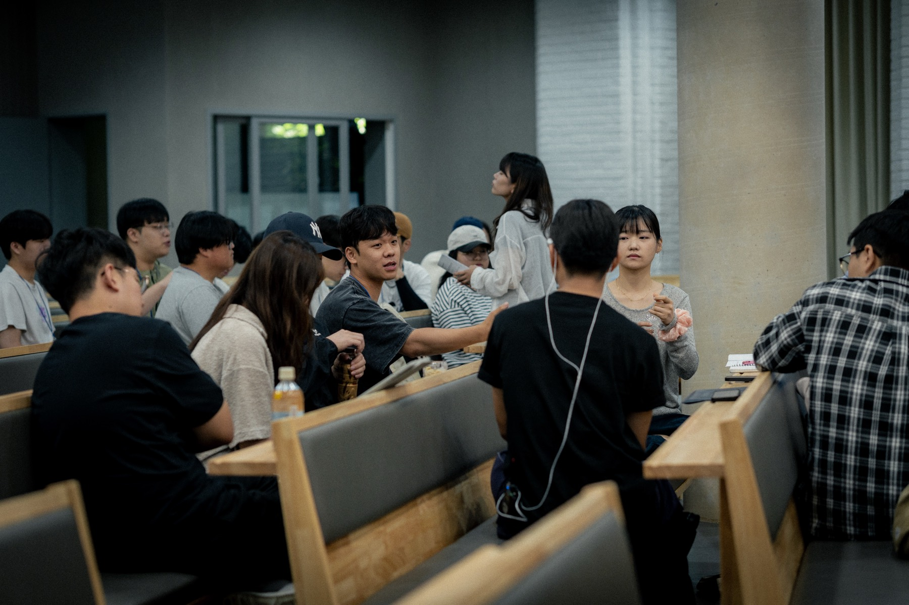
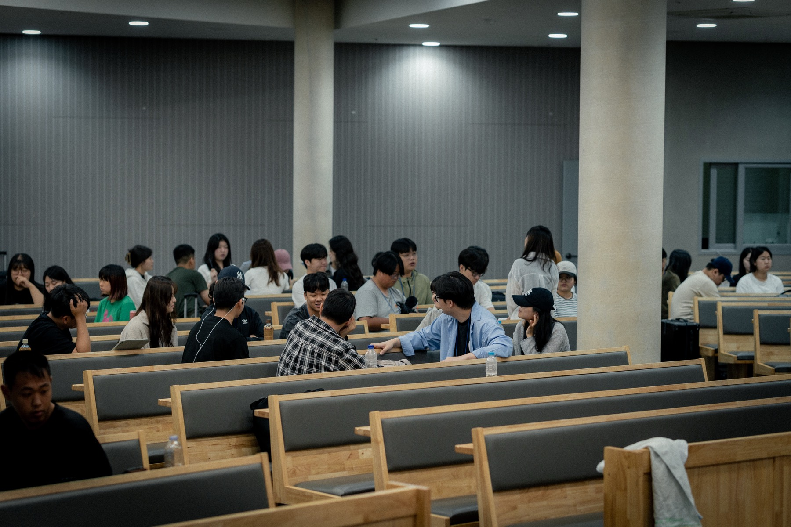

우리는
"청년아! 다시 말씀 앞에 서다. Ad Fontes!"
라는 표어로 함께 예배하고 있어요.
BEFORE WORSHIP
하나님께서 우리를 예배자로 먼저 부르신 사실을 기억하고,
그에 마땅한 반응으로 기도하는 시간이에요.
예배 시작 전, 10분 일찍 모여 기도하는 일에 참여해보실래요?
예배를 준비하는 마음
ORDER OF WORSHIP
주일 오후, 각 순서를 터치하면 친절한 설명이 펼쳐져요.
AFTER WORSHIP
지난 한 주의 삶을 반추하고,
다음 한 주의 삶을 함께 결단하는 시간이에요.



